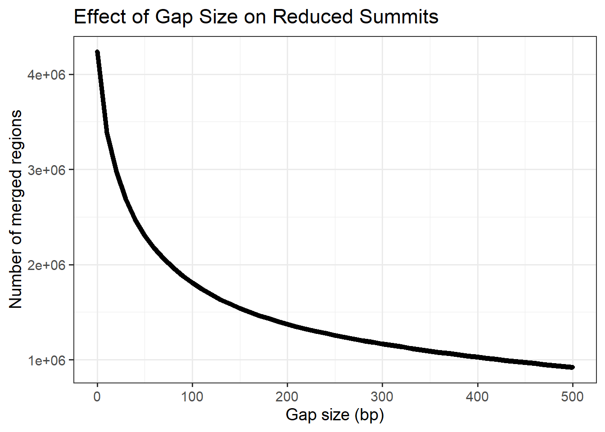

Summit Files
Renee Matthews
2025-12-05
Last updated: 2025-12-05
Checks: 7 0
Knit directory: DXR_continue/
This reproducible R Markdown analysis was created with workflowr (version 1.7.1). The Checks tab describes the reproducibility checks that were applied when the results were created. The Past versions tab lists the development history.
Great! Since the R Markdown file has been committed to the Git repository, you know the exact version of the code that produced these results.
Great job! The global environment was empty. Objects defined in the global environment can affect the analysis in your R Markdown file in unknown ways. For reproduciblity it’s best to always run the code in an empty environment.
The command set.seed(20250701) was run prior to running
the code in the R Markdown file. Setting a seed ensures that any results
that rely on randomness, e.g. subsampling or permutations, are
reproducible.
Great job! Recording the operating system, R version, and package versions is critical for reproducibility.
Nice! There were no cached chunks for this analysis, so you can be confident that you successfully produced the results during this run.
Great job! Using relative paths to the files within your workflowr project makes it easier to run your code on other machines.
Great! You are using Git for version control. Tracking code development and connecting the code version to the results is critical for reproducibility.
The results in this page were generated with repository version 56518c1. See the Past versions tab to see a history of the changes made to the R Markdown and HTML files.
Note that you need to be careful to ensure that all relevant files for
the analysis have been committed to Git prior to generating the results
(you can use wflow_publish or
wflow_git_commit). workflowr only checks the R Markdown
file, but you know if there are other scripts or data files that it
depends on. Below is the status of the Git repository when the results
were generated:
Ignored files:
Ignored: .Rhistory
Ignored: .Rproj.user/
Ignored: data/Bed_exports/
Ignored: data/Cormotif_data/
Ignored: data/DER_data/
Ignored: data/Other_paper_data/
Ignored: data/TE_annotation/
Ignored: data/alignment_summary.txt
Ignored: data/all_peak_final_dataframe.txt
Ignored: data/cell_line_info_.tsv
Ignored: data/full_summary_QC_metrics.txt
Ignored: data/motif_lists/
Ignored: data/number_frag_peaks_summary.txt
Untracked files:
Untracked: H3K27ac_all_regions_test.bed
Untracked: H3K27ac_consensus_clusters_test.bed
Untracked: analysis/Top2a_Top2b_expression.Rmd
Untracked: analysis/chromHMM.Rmd
Untracked: analysis/human_genome_composition.Rmd
Untracked: analysis/maps_and_plots.Rmd
Untracked: analysis/proteomics.Rmd
Untracked: code/making_analysis_file_summary.R
Untracked: other_analysis/
Unstaged changes:
Modified: analysis/Outlier_removal.Rmd
Modified: analysis/final_analysis.Rmd
Modified: analysis/multiQC_cut_tag.Rmd
Note that any generated files, e.g. HTML, png, CSS, etc., are not included in this status report because it is ok for generated content to have uncommitted changes.
These are the previous versions of the repository in which changes were
made to the R Markdown
(analysis/summit_files_processing.Rmd) and HTML
(docs/summit_files_processing.html) files. If you’ve
configured a remote Git repository (see ?wflow_git_remote),
click on the hyperlinks in the table below to view the files as they
were in that past version.
| File | Version | Author | Date | Message |
|---|---|---|---|---|
| Rmd | 56518c1 | reneeisnowhere | 2025-12-05 | wflow_publish("analysis/summit_files_processing.Rmd") |
| Rmd | 7dc0877 | reneeisnowhere | 2025-12-04 | wflow_git_commit("analysis/summit_files_processing.Rmd") |
| Rmd | f5ee19a | reneeisnowhere | 2025-12-04 | wflow_git_commit("analysis/summit_files_processing.Rmd") |
| Rmd | 23819ba | reneeisnowhere | 2025-12-03 | wflow_git_commit("analysis/summit_files_processing.Rmd") |
| html | 8d89436 | reneeisnowhere | 2025-11-21 | Build site. |
| Rmd | 8a10509 | reneeisnowhere | 2025-11-21 | wflow_publish("analysis/summit_files_processing.Rmd") |
| Rmd | f30fab7 | reneeisnowhere | 2025-11-19 | wflow_git_commit("analysis/summit_files_processing.Rmd") |
library(tidyverse)
library(GenomicRanges)
library(plyranges)
library(genomation)
library(readr)
library(rtracklayer)
library(stringr)
library(BiocParallel)
library(parallel)
library(future.apply)sampleinfo <- read_delim("data/sample_info.tsv", delim = "\t")
##Path to histone summit files
H3K27ac_dir <- "C:/Users/renee/Other_projects_data/DXR_data/final_data/summit_files/H3K27ac"
##pull all histone files together
H3K27ac_summit_files <- list.files(
path = H3K27ac_dir,
pattern = "\\.bed$",
recursive = TRUE,
full.names = TRUE
)
length(H3K27ac_summit_files)[1] 30# head(H3K27ac_summit_files)First steps: pulling in the information of Sets and locations Pulling in the summit files, concatenation of all summits into one large file
peakAnnoList_H3K27ac <- readRDS("data/motif_lists/H3K27ac_annotated_peaks.RDS")
H3K27ac_sets_gr <- lapply(peakAnnoList_H3K27ac, function(df) {
as_granges(df)
})
read_summit <- function(file){
peaks <- read.table(file,header = FALSE)
colnames(peaks) <- c("chr","start","end","name","score")
GRanges(
seqnames = peaks$chr,
ranges = IRanges(start=peaks$start, end = peaks$start),
score=peaks$score,
file=basename(file),
Library_ID = stringr::str_remove(basename(file), "_FINAL_summits\\.bed$")
)
}
all_H3K27ac_summits_list<- lapply(H3K27ac_summit_files, read_summit)
all_H3K27ac_summits_gr <- do.call(c, all_H3K27ac_summits_list) # combine into one GRanges object
H3K27ac_lookup <- imap_dfr(peakAnnoList_H3K27ac[1:3], ~
tibble(Peakid = .x@anno$Peakid, cluster = .y)
)pick_best_summit_per_roi <- function(roi_gr, summit_gr, score_col = "signalValue") {
hits <- findOverlaps(roi_gr, summit_gr)
df <- data.frame(
roi_idx = queryHits(hits),
summit_idx = subjectHits(hits),
score = mcols(summit_gr)[[score_col]][subjectHits(hits)]
)
# Pick summit with highest score for each ROI
best <- df %>%
group_by(roi_idx) %>%
slice_max(order_by = score, n = 1) %>%
ungroup()
# Build the final GRanges object
best_summits <- summit_gr[best$summit_idx]
best_summits$ROI_name <- roi_gr$Peakid[best$roi_idx]
best_summits
}
#
# best_summits <- pick_best_summit_per_roi(
# ROIs, highest_summits_long_gr, score_col = "peakHeight"
# )pick_center_summit <- function(roi_gr, summit_gr) {
hits <- findOverlaps(roi_gr, summit_gr)
df <- data.frame(
roi_idx = queryHits(hits),
summit_idx = subjectHits(hits),
dist_to_center = abs(
start(summit_gr)[subjectHits(hits)] -
round((start(roi_gr)[queryHits(hits)] + end(roi_gr)[queryHits(hits)]) / 2)
)
)
best <- df %>%
group_by(roi_idx) %>%
slice_min(order_by = dist_to_center, n = 1) %>%
ungroup()
best_summits <- summit_gr[best$summit_idx]
best_summits$ROI_name <- roi_gr$Peakid[best$roi_idx]
best_summits
}pick_consensus_summit <- function(roi_gr, summit_gr, score_col = "score") {
# Find which summits overlap each ROI
hits <- findOverlaps(roi_gr, summit_gr)
df <- data.frame(
roi_idx = queryHits(hits),
summit_idx = subjectHits(hits),
summit_pos = start(summit_gr)[subjectHits(hits)],
score = mcols(summit_gr)[[score_col]]
)
# Count frequency per summit position within each ROI
freq_df <- df %>%
group_by(roi_idx, summit_pos) %>%
summarise(
freq = n(),
max_score = max(score),
.groups = "drop"
)
# Pick the summit with highest frequency; break ties with max score
best <- freq_df %>%
group_by(roi_idx) %>%
slice_max(order_by = freq, n = 1, with_ties = TRUE) %>%
slice_max(order_by = max_score, n = 1) %>%
ungroup()
# Map back to original GRanges
best_idx <- df$summit_idx[match(
paste0(best$roi_idx, "_", best$summit_pos),
paste0(df$roi_idx, "_", df$summit_pos)
)]
final_summits <- summit_gr[best_idx]
final_summits$ROI_name <- roi_gr$Peakid[best$roi_idx]
final_summits
}Analysis of all summit files, no grouping
first creating summit clusters that are around 100bps across all summit files
# Merge summits within 100 bp clusters but keep metadata
# ------------------------
# 1 Reduce with revmap to keep track of original indices
clusters <- GenomicRanges::reduce(all_H3K27ac_summits_gr, min.gapwidth = 100,
ignore.strand = TRUE, with.revmap = TRUE)
# 2 For each cluster, pick the highest-score summit
scores <- mcols(all_H3K27ac_summits_gr)$score
revmap <- clusters$revmap
# Compute the highest-score index per cluster
highest_idx <- sapply(revmap, function(idx) idx[which.max(scores[idx])])
# Subset GRanges once
highest_per_cluster_gr <- all_H3K27ac_summits_gr[highest_idx]
# ------------------------
# 3 Count merged summits per ROI
# ------------------------
ROIs <- H3K27ac_sets_gr$all_H3K27ac # your ROI GRanges
# Optimized counting
roi_counts <- countOverlaps(ROIs, highest_per_cluster_gr)
mcols(ROIs)$merged_summit_count <- roi_counts
# ------------------------
# 5 Map ROIs to clusters with sample info
# ------------------------
overlaps <- findOverlaps(ROIs, highest_per_cluster_gr)
roi_hits_df <- as.data.frame(overlaps) %>%
mutate(
Peakid = ROIs$Peakid[queryHits],
Library_ID = mcols(highest_per_cluster_gr)$Library_ID[subjectHits],
score = mcols(highest_per_cluster_gr)$score[subjectHits],
file = mcols(highest_per_cluster_gr)$file[subjectHits]
) %>%
left_join(sampleinfo, by = c("Library_ID" = "Library ID"))
## initualize count column on ROI df
mcols(ROIs)$summit_count <- 0
# Tabulate counts
counts <- table(queryHits(overlaps))
mcols(ROIs)$summit_count[as.numeric(names(counts))] <- as.numeric(counts)
# Convert to dataframe for plotting
roi_counts_df <- as.data.frame(ROIs) %>%
select(Peakid, seqnames, start, end, summit_count) %>%
mutate(roi_size=end-start)
# Optional: add Set / cluster info
roi_counts_df <- roi_counts_df %>%
left_join(H3K27ac_lookup, by = "Peakid")
# ------------------------
# 6 Optional: add Set/cluster info per ROI
# ------------------------
roi_hits_df <- roi_hits_df %>%
left_join(H3K27ac_lookup, by = "Peakid")
# Now roi_hits_df is ready for plotting or analysis:
# Columns include Peakid, ROI coordinates, Library_ID, score, file, Individual, Treatment, Timepoint, cluster
# Optional: add sample info
roi_hits_df <- as.data.frame(overlaps) %>%
mutate(
Peakid = ROIs$Peakid[queryHits],
Library_ID = mcols(all_H3K27ac_summits_gr)$Library_ID[subjectHits],
score = mcols(all_H3K27ac_summits_gr)$score[subjectHits],
file = mcols(all_H3K27ac_summits_gr)$file[subjectHits]
) %>%
left_join(sampleinfo, by = c("Library_ID" = "Library ID"))Plotting some summits from the first process
ROIs %>%
as.data.frame() %>%
# dplyr::filter(merged_summit_count==1) %>%
left_join(H3K27ac_lookup, by = "Peakid") %>% # make sure join key matches
filter(!is.na(cluster)) %>%
ggplot(aes(x = cluster, y = merged_summit_count)) +
geom_jitter(width = 0.2, height = 0, alpha = 0.6, size = 2, color = "steelblue") +
theme_bw() +
xlab("Set") +
ylab("Number of merged summits per ROI") +
ggtitle("Distribution of merged summit counts by Set")
| Version | Author | Date |
|---|---|---|
| 8d89436 | reneeisnowhere | 2025-11-21 |
roi_counts_df %>%
ggplot(aes(x = summit_count)) +
geom_histogram(binwidth = 1, fill="steelblue", color="black") +
theme_bw() +
xlab("Number of summits per ROI") +
ylab("Number of ROIs")
| Version | Author | Date |
|---|---|---|
| 8d89436 | reneeisnowhere | 2025-11-21 |
roi_counts_df %>%
ggplot(aes(x = summit_count)) +
geom_histogram(binwidth = 1, fill="steelblue", color="black") +
theme_bw() +
xlab("Number of summits per ROI") +
ylab("Number of ROIs")+
ggtitle("Zoomed in summit per ROI")+
coord_cartesian(xlim=c(0,50))
| Version | Author | Date |
|---|---|---|
| 8d89436 | reneeisnowhere | 2025-11-21 |
roi_counts_df %>%
# group_by(Peakid) %>% tally #%>%
# left_join(H3K27ac_lookup) %>%
ggplot(aes(x = roi_size, y = summit_count)) +
geom_point(alpha = 0.5) +
geom_smooth(method = "lm", se = FALSE) +
labs(
x = "ROI size (bp)",
y = "# of summits",
title = "Relationship between ROI size and # of Summit clusters"
) +
theme_classic()#+
| Version | Author | Date |
|---|---|---|
| 8d89436 | reneeisnowhere | 2025-11-21 |
# coord_cartesian(xlim=c(-1,400), ylim=c(0,10))
roi_counts_df %>%
# group_by(Peakid) %>% tally #%>%
# left_join(H3K27ac_lookup) %>%
ggplot(aes(x = roi_size, y = summit_count)) +
geom_point(alpha = 0.5) +
geom_smooth(method = "lm", se = FALSE) +
labs(
x = "ROI size (bp)",
y = "# of summits",
title = "Zoomed in Relationship between ROI size and # of Summit clusters"
) +
theme_classic()+
coord_cartesian(xlim=c(-1,800), ylim=c(0,10))
| Version | Author | Date |
|---|---|---|
| 8d89436 | reneeisnowhere | 2025-11-21 |
Merging strategies!
This is now the place I will take my files and now try to apply the same merging strategy as I did the peaks merging strategy. Step 1: reduce all trt-time summits within 100 bp
###Adding in sampleinfo dataframe
meta <- as.data.frame(mcols(all_H3K27ac_summits_gr))
meta2 <- meta %>%
left_join(., sampleinfo, by=c("Library_ID"="Library ID"))
mcols(all_H3K27ac_summits_gr) <- meta2
mcols(all_H3K27ac_summits_gr)$group <-
paste(all_H3K27ac_summits_gr$Treatment,
all_H3K27ac_summits_gr$Timepoint,
sep = "_")
###now splitting into grouped granges
gr_by_group <- split(all_H3K27ac_summits_gr,
all_H3K27ac_summits_gr$group)
# gr_by_group <- as(gr_by_group, "CompressedGRangesList")
### now reducing within some width by 100 bp with revmap
groups <- unique(all_H3K27ac_summits_gr$group)
reduced_groups <- lapply(groups, function(g) {
gr_sub <- all_H3K27ac_summits_gr[all_H3K27ac_summits_gr$group == g]
GenomicRanges::reduce(gr_sub, min.gapwidth = 100, ignore.strand = TRUE, with.revmap = TRUE)
})
reduced_groups_200 <- lapply(groups, function(g) {
gr_sub <- all_H3K27ac_summits_gr[all_H3K27ac_summits_gr$group == g]
GenomicRanges::reduce(gr_sub, min.gapwidth = 200, ignore.strand = TRUE, with.revmap = TRUE)
})
reduced_groups_300 <- lapply(groups, function(g) {
gr_sub <- all_H3K27ac_summits_gr[all_H3K27ac_summits_gr$group == g]
GenomicRanges::reduce(gr_sub, min.gapwidth = 300, ignore.strand = TRUE, with.revmap = TRUE)
})
reduced_groups_400 <- lapply(groups, function(g) {
gr_sub <- all_H3K27ac_summits_gr[all_H3K27ac_summits_gr$group == g]
GenomicRanges::reduce(gr_sub, min.gapwidth = 400, ignore.strand = TRUE, with.revmap = TRUE)
})
names(reduced_groups) <- groups
names(reduced_groups_200) <- groups
names(reduced_groups_300) <- groups
names(reduced_groups_400) <- groups
# redux_main_100 <- sum(sapply(reduced_groups, length))
# redux_main_200 <- sum(sapply(reduced_groups_200, length))
# redux_main_300 <- sum(sapply(reduced_groups_300, length))
# redux_main_400 <- sum(sapply(reduced_groups_400, length))Reduction plots
Plotting effect of reduction bp number on total number of clusters
gap_sizes <- seq(0, 500, by = 10)
# Function to apply reduce for each gap and return counts
results <- lapply(gap_sizes, function(g) {
reduced <- GenomicRanges::reduce(all_H3K27ac_summits_gr, min.gapwidth = g)
data.frame(gap = g, n_regions = length(reduced))
})
# Combine results
min_gap_summary <- bind_rows(results)
ggplot(min_gap_summary, aes(x = gap, y= n_regions))+
geom_line(linewidth=2)+
geom_point()+
theme_bw(base_size=14)+
labs(
title = "Effect of Gap Size on Reduced Summits",
x = "Gap size (bp)",
y = "Number of merged regions"
)
| Version | Author | Date |
|---|---|---|
| 8d89436 | reneeisnowhere | 2025-11-21 |
# Function to pick highest summit per cluster from a reduced GRanges list
get_highest_per_group <- function(reduced_groups, orig_summits_gr, group_col = "group") {
groups <- names(reduced_groups)
highest_per_group <- vector("list", length(reduced_groups))
names(highest_per_group) <- groups
for(i in seq_along(reduced_groups)) {
gr <- reduced_groups[[i]]
# original summits for this group
orig <- orig_summits_gr[mcols(orig_summits_gr)[[group_col]] == groups[i]]
scores <- orig$score
# revmap is a CompressedIntegerList
revmap <- mcols(gr)$revmap
# skip if revmap is NULL
if(is.null(revmap)) next
# unlist all indices once
all_idx <- unlist(revmap, use.names = FALSE)
# repeat cluster index for each element in revmap
cluster_idx <- rep(seq_along(revmap), times = elementNROWS(revmap))
# scores for all indices
all_scores <- scores[all_idx]
# For each cluster, pick the index of the max score
max_idx_per_cluster <- tapply(seq_along(all_scores), cluster_idx, function(ii) {
ii[which.max(all_scores[ii])]
})
# Convert back to original indices
orig_idx <- all_idx[unlist(max_idx_per_cluster)]
# subset original GRanges
highest_per_group[[i]] <- orig[orig_idx]
}
# Flatten any nested GRangesList
flatten_gr <- function(x) {
if (inherits(x, "GRanges")) return(x)
if (inherits(x, "GRangesList")) return(unlist(x, use.names = FALSE))
if (is.list(x)) return(do.call(c, lapply(x, flatten_gr)))
stop("Unexpected object type")
}
highest_summits_gr <- flatten_gr(highest_per_group)
# Return as long GRanges with group column
highest_summits_df <- bind_rows(
lapply(names(highest_per_group), function(gr_name) {
as.data.frame(highest_per_group[[gr_name]]) %>%
mutate(group = gr_name)
})
)
highest_summits_long_gr <- highest_summits_df %>% GRanges()
return(highest_summits_long_gr)
}reduced_sets <- list(
"100bp" = reduced_groups,
"200bp" = reduced_groups_200,
"300bp" = reduced_groups_300,
"400bp" = reduced_groups_400
)
highest_summits_all <- lapply(reduced_sets, get_highest_per_group, orig_summits_gr = all_H3K27ac_summits_gr)Looking at number of summits across groups as a function of min.gap number
##Compute counts per group for each reduced set
summit_counts_group <- lapply(names(highest_summits_all), function(gap_name) {
gr <- highest_summits_all[[gap_name]]
# make sure group column exists
if(!"group" %in% colnames(mcols(gr))) stop("GRanges must have 'group' column")
df <- as.data.frame(gr) %>%
count(group, name = "n_summits") %>%
mutate(gap = gap_name)
return(df)
}) %>% bind_rows()
ggplot(summit_counts_group, aes(x = gap, y = n_summits, group = group, color = group)) +
geom_line(size = 1.2) +
geom_point(size = 3) +
theme_classic(base_size = 14) +
labs(
title = "Effect of min-gap width on number of highest summits per group",
x = "Min-gap width (bp)",
y = "Number of highest summits",
color = "Group"
) +
theme(axis.text.x = element_text(angle = 45, hjust = 1))
| Version | Author | Date |
|---|---|---|
| 8d89436 | reneeisnowhere | 2025-11-21 |
Summit average per ROI
What is the average number of summits per ROI as a function of min.gapwidth
double_reduce_summits <- function(summits_gr, ROIs, groups,
min_gap_within_seq = c(100,200,300),
min_gap_across_seq = c(100,200,300),
BPPARAM = MulticoreParam(4)) {
# Pre-split summits by group to avoid repeated subsetting
summits_by_group <- split(summits_gr, summits_gr$group)
# Create all gap combinations
gap_combos <- expand.grid(min_gap_within = min_gap_within_seq,
min_gap_across = min_gap_across_seq,
stringsAsFactors = FALSE)
# Apply in parallel for each combination
results <- bplapply(seq_len(nrow(gap_combos)), function(i) {
g1 <- gap_combos$min_gap_within[i]
g2 <- gap_combos$min_gap_across[i]
# -----------------
# Step 1: Reduce within group
# -----------------
highest_per_group <- lapply(groups, function(grp) {
gr_sub <- summits_by_group[[grp]]
if(length(gr_sub) == 0) return(NULL)
# reduce within group with revmap
red <- GenomicRanges::reduce(gr_sub, min.gapwidth = g1, ignore.strand = TRUE, with.revmap = TRUE)
revmap <- mcols(red)$revmap
if(length(revmap) == 0) return(NULL)
# pick highest score per cluster
cluster_idx <- rep(seq_along(revmap), times = elementNROWS(revmap))
all_idx <- unlist(revmap, use.names = FALSE)
all_scores <- gr_sub$score[all_idx]
max_idx_per_cluster <- tapply(seq_along(all_scores), cluster_idx, function(ii) {
ii[which.max(all_scores[ii])]
})
gr_sub[all_idx[unlist(max_idx_per_cluster)]]
})
highest_per_group <- highest_per_group[!sapply(highest_per_group, is.null)]
# -----------------
# Step 2: Merge across groups
# -----------------
if(length(highest_per_group) == 0) return(NULL)
all_highest <- do.call(c, highest_per_group)
consensus <- GenomicRanges::reduce(all_highest, min.gapwidth = g2, ignore.strand = TRUE)
# -----------------
# Step 3: Count summits per ROI (vectorized)
# -----------------
hits <- findOverlaps(ROIs, consensus)
counts <- as.data.frame(table(queryHits(hits)))
colnames(counts) <- c("ROI_idx", "n_summits")
counts$ROI_idx <- as.integer(as.character(counts$ROI_idx))
counts$min_gap_within <- g1
counts$min_gap_across <- g2
counts
}, BPPARAM = BPPARAM)
# Combine results
results_df <- bind_rows(results)
return(results_df)
}BPPARAM <- SnowParam(workers = 4, type = "SOCK")
register(BPPARAM)
heatmap_data <- double_reduce_summits(
summits_gr = all_H3K27ac_summits_gr,
ROIs = H3K27ac_sets_gr$all_H3K27ac,
groups = unique(all_H3K27ac_summits_gr$group),
min_gap_within_seq = c(100,200,300,400),
min_gap_across_seq = c(100,200,300,400),
BPPARAM = BPPARAM
)
heatmap_avg <- heatmap_data %>%
group_by(min_gap_within, min_gap_across) %>%
summarise(mean_summits = mean(n_summits, na.rm = TRUE), .groups = "drop")Exploring differences in min gaps in step 1 and step 2 reductions
ggplot(heatmap_avg, aes(x = factor(min_gap_within),
y = factor(min_gap_across),
fill = mean_summits)) +
geom_tile(color = "white") +
geom_text(aes(label = round(mean_summits, 1)), color = "black", size = 4) +
scale_fill_viridis_c(option = "plasma") +
labs(
x = "Within-group min-gap (bp)",
y = "Across-group min-gap (bp)",
fill = "Mean # summits per ROI",
title = "Effect of min-gap width on summits per ROI"
) +
theme_minimal(base_size = 14) +
theme(axis.text.x = element_text(angle = 45, hjust = 1))
| Version | Author | Date |
|---|---|---|
| 8d89436 | reneeisnowhere | 2025-11-21 |
after i figure my final min.gaps, here is where the places are located
# --- Step 1: Reduce within groups and pick highest summit per cluster ---
get_highest_per_group_final <- function(summits_gr, groups = NULL, min_gap_within = 100) {
if(is.null(groups)) {
groups <- unique(summits_gr$group)
}
highest_per_group <- lapply(groups, function(grp) {
gr_sub <- summits_gr[summits_gr$group == grp]
if(length(gr_sub) == 0) return(NULL)
# Reduce within group
reduced <- GenomicRanges::reduce(gr_sub, min.gapwidth = min_gap_within, ignore.strand = TRUE, with.revmap = TRUE)
# Pick highest scoring summit per cluster
revmap <- reduced$revmap
scores <- gr_sub$score
all_idx <- unlist(revmap, use.names = FALSE)
cluster_idx <- rep(seq_along(revmap), times = elementNROWS(revmap))
all_scores <- scores[all_idx]
max_idx_per_cluster <- tapply(seq_along(all_scores), cluster_idx, function(ii) {
ii[which.max(all_scores[ii])]
})
orig_idx <- all_idx[unlist(max_idx_per_cluster)]
gr_sub[orig_idx]
})
# Flatten list of GRanges
highest_per_group <- do.call(c, highest_per_group)
return(highest_per_group)
}
# --- Step 2: Reduce across groups to get final consensus ---
get_consensus_summits <- function(highest_per_group_gr, min_gap_across = 400) {
# Reduce across groups
reduced <- GenomicRanges::reduce(highest_per_group_gr, min.gapwidth = min_gap_across, ignore.strand = TRUE, with.revmap = TRUE)
# Pick highest scoring summit per cluster across all groups
revmap <- reduced$revmap
scores <- highest_per_group_gr$score
all_idx <- unlist(revmap, use.names = FALSE)
cluster_idx <- rep(seq_along(revmap), times = elementNROWS(revmap))
all_scores <- scores[all_idx]
max_idx_per_cluster <- tapply(seq_along(all_scores), cluster_idx, function(ii) {
ii[which.max(all_scores[ii])]
})
orig_idx <- all_idx[unlist(max_idx_per_cluster)]
highest_per_group_gr[orig_idx]
}
add_ROI_to_consensus <- function(consensus_gr, ROIs_gr) {
hits <- findOverlaps(consensus_gr, ROIs_gr)
# Extract metadata from consensus_gr
consensus_meta <- mcols(consensus_gr)[queryHits(hits), , drop = FALSE]
df <- data.frame(
summit_chr = seqnames(consensus_gr)[queryHits(hits)],
summit_pos = start(consensus_gr)[queryHits(hits)],
summit_score = consensus_gr$score[queryHits(hits)],
Peakid = ROIs_gr$Peakid[subjectHits(hits)],
roi_start = start(ROIs_gr)[subjectHits(hits)],
roi_end = end(ROIs_gr)[subjectHits(hits)]
)
# Bind the metadata from consensus_gr
df <- cbind(df, as.data.frame(consensus_meta))
df %>%
mutate(rel_pos = (summit_pos - roi_start)/(roi_end - roi_start),
roi_center = roi_start + (roi_end - roi_start)/2,
dist_center = summit_pos - roi_center)
}highest_100 <- get_highest_per_group_final(all_H3K27ac_summits_gr, min_gap_within = 100)
final_consensus <- get_consensus_summits(highest_100, min_gap_across = 400)
final_df_100_400 <- add_ROI_to_consensus(final_consensus, H3K27ac_sets_gr$all_H3K27ac)
ggplot(final_df_100_400, aes(x = dist_center, y = Peakid)) +
ggrastr::geom_point_rast(size = 0.6, alpha = 0.2) +
geom_vline(xintercept = 0, linetype = "dashed") + # ROI center
labs(
x = "Distance from ROI center (bp)",
y = "ROI",
color = "Group"
) +
# theme_minimal() +
theme(
axis.text.y = element_blank(),
axis.ticks.y = element_blank()
)+
ggtitle("100-400 run comparison")
| Version | Author | Date |
|---|---|---|
| 8d89436 | reneeisnowhere | 2025-11-21 |
final_df_100_400 %>%
group_by(Peakid) %>%
slice_max(summit_score) %>%
ggplot(., aes(x = dist_center, y = Peakid)) +
ggrastr::geom_point_rast(size = 0.6, alpha = 0.2) +
geom_vline(xintercept = 0, linetype = "dashed") + # ROI center
geom_vline(xintercept = 500, linetype = "dashed",color="red") + # left 500
geom_vline(xintercept = -500, linetype = "dashed",color="red") + # right 500
geom_vline(xintercept = 250, linetype = "dashed",color="yellow") + # left 500
geom_vline(xintercept = -250, linetype = "dashed",color="yellow") + # right 500
labs(
x = "Distance from ROI center (bp)",
y = "ROI",
color = "Group"
) +
ggtitle("100-400 run comparison")+
# theme_minimal() +
theme(
axis.text.y = element_blank(),
axis.ticks.y = element_blank()
)+
coord_cartesian(xlim=c(-2000,2000))
| Version | Author | Date |
|---|---|---|
| 8d89436 | reneeisnowhere | 2025-11-21 |
final_df_100_400 %>%
group_by(Peakid) %>%
slice_max(summit_score) %>%
ggplot(., aes(x = dist_center)) +
geom_density()+
geom_vline(xintercept = 0, linetype = "dashed") + # ROI center
geom_vline(xintercept = 500, linetype = "dashed",color="red") + # left 500
geom_vline(xintercept = -500, linetype = "dashed",color="red") + # right 500
geom_vline(xintercept = 250, linetype = "dashed",color="blue") + # left 500
geom_vline(xintercept = -250, linetype = "dashed",color="blue") + # right 500
coord_cartesian(xlim=c(-2000,2000))+
ggtitle("100-400 run comparison")
| Version | Author | Date |
|---|---|---|
| 8d89436 | reneeisnowhere | 2025-11-21 |
highest_200 <- get_highest_per_group_final(all_H3K27ac_summits_gr, min_gap_within = 200)
final_consensus2 <- get_consensus_summits(highest_200, min_gap_across = 400)
final_df_200_400 <- add_ROI_to_consensus(final_consensus2, H3K27ac_sets_gr$all_H3K27ac)
ggplot(final_df_200_400, aes(x = dist_center, y = Peakid)) +
ggrastr::geom_point_rast(size = 0.6, alpha = 0.2) +
geom_vline(xintercept = 0, linetype = "dashed", color="green") + # ROI center
geom_vline(xintercept = 500, linetype = "dashed",color="red") + # left 500
geom_vline(xintercept = -500, linetype = "dashed",color="red") + # right 500
labs(
x = "Distance from ROI center (bp)",
y = "ROI",
color = "Group"
) +
ggtitle("200-400 run comparison")+
# theme_minimal() +
theme(
axis.text.y = element_blank(),
axis.ticks.y = element_blank()
)+coord_cartesian(xlim=c(-2000,2000))
| Version | Author | Date |
|---|---|---|
| 8d89436 | reneeisnowhere | 2025-11-21 |
function get highest scoring summit clustered by group:
#' Get highest summit per reduced cluster per group using plyranges
#'
#' @param gr GRanges with metadata columns: group, score
#' @param min_gap numeric, minimum gap width to merge summits
#' @param ignore.strand logical, whether to ignore strand when reducing
#'
#' @return GRanges of highest scoring summit per reduced cluster per group
get_highest_summits_with_cluster_id <- function(gr, min_gap = 100, ignore.strand = TRUE) {
gr %>%
# Reduce summits per group
group_by(group) %>%
reduce_ranges(min_gap = min_gap, ignore.strand = ignore.strand, with_revmap = TRUE) %>%
# Add a cluster_id based on row_number()
mutate(cluster_id = paste0(group, "_cluster_", row_number())) %>%
# join back original summits
join_overlap_inner(gr, suffix = c(".cluster", ".orig")) %>%
# slice max per cluster_id
group_by(cluster_id) %>%
slice_max(score.orig, with_ties = FALSE) %>%
ungroup() %>%
# select only the original summit coordinates
select(seqnames, start = start.orig, end = end.orig, score = score.orig,
group, cluster_id)
}function reduce_and_pick_highest
#### this quickly reduces any granges summit collection by the gap that is passed in the function. It returns the highest scoring summit from the cluster of summits.
reduce_and_pick_highest <- function(gr, gap = 100) {
# Preextract score once
sc <- gr$score
# Fast reduce with revmap
red <- GenomicRanges::reduce(
gr,
min.gapwidth = gap,
ignore.strand = TRUE,
with.revmap = TRUE
)
# This is vectorized and very fast
idx_list <- red$revmap
# Pick highest-scoring summit within each cluster
sel <- IntegerList(
lapply(idx_list, function(idx) idx[which.max(sc[idx])])
)
# Convert IntegerList → integer vector
best_idx <- unlist(sel, use.names = FALSE)
# Subset original GRanges
gr[best_idx]
}redux_100 <- reduce_and_pick_highest(all_H3K27ac_summits_gr, gap = 100)
redux_200 <- reduce_and_pick_highest(all_H3K27ac_summits_gr, gap = 200)
redux_300 <- reduce_and_pick_highest(all_H3K27ac_summits_gr, gap = 300)
redux_Peak_100 <- add_ROI_to_consensus(redux_100, H3K27ac_sets_gr$all_H3K27ac)
redux_Peak_200 <- add_ROI_to_consensus(redux_200, H3K27ac_sets_gr$all_H3K27ac)
redux_Peak_300 <- add_ROI_to_consensus(redux_300, H3K27ac_sets_gr$all_H3K27ac)ggplot(redux_Peak_100, aes(x = dist_center, y = Peakid)) +
ggrastr::geom_point_rast(size = 0.6, alpha = 0.2) +
geom_vline(xintercept = 0, linetype = "dashed") + # ROI center
geom_vline(xintercept = 500, linetype = "dashed",color="red") + # left 500
geom_vline(xintercept = -500, linetype = "dashed",color="red") + # right 500
labs(
x = "Distance from ROI center (bp)",
y = "ROI",
color = "Group"
) +
# theme_minimal() +
theme(
axis.text.y = element_blank(),
axis.ticks.y = element_blank()
)+
ggtitle("Only single reduction 100bp")
ggplot(redux_Peak_200, aes(x = dist_center, y = Peakid)) +
ggrastr::geom_point_rast(size = 0.6, alpha = 0.2) +
geom_vline(xintercept = 0, linetype = "dashed") + # ROI center
geom_vline(xintercept = 500, linetype = "dashed",color="red") + # left 500
geom_vline(xintercept = -500, linetype = "dashed",color="red") + # right 500
labs(
x = "Distance from ROI center (bp)",
y = "ROI",
color = "Group"
) +
# theme_minimal() +
theme(
axis.text.y = element_blank(),
axis.ticks.y = element_blank()
)+
ggtitle("Only single reduction 200bp")
ggplot(redux_Peak_300, aes(x = dist_center, y = Peakid)) +
ggrastr::geom_point_rast(size = 0.6, alpha = 0.2) +
geom_vline(xintercept = 0, linetype = "dashed") + # ROI center
geom_vline(xintercept = 500, linetype = "dashed",color="red") + # left 500
geom_vline(xintercept = -500, linetype = "dashed",color="red") + # right 500
labs(
x = "Distance from ROI center (bp)",
y = "ROI",
color = "Group"
) +
# theme_minimal() +
theme(
axis.text.y = element_blank(),
axis.ticks.y = element_blank()
)+
ggtitle("Only single reduction 300bp")Creating Final 100-400 reduction summit set
Here is how I ran the get_highest_per_group_final
### step 1: reduce within group using 100 bp gap
highest_100_final <- get_highest_per_group_final(all_H3K27ac_summits_gr, min_gap_within = 100)
### step 2: reduce across groups (converge)
final_consensus_final <- get_consensus_summits(highest_100_final, min_gap_across = 400)
### step 3: add in ROI information
final_df_summits <- add_ROI_to_consensus(final_consensus_final, H3K27ac_sets_gr$all_H3K27ac)final_df_summits %>%
ggplot(., aes(x=rel_pos))+
geom_histogram(bins = 100)+
geom_vline(xintercept = 0.5)+
ggtitle("Relative position of consensus summits by ROI")Debugging why some ROIs do not have summits when they clearly do in IGV
### step 1: Finding which ROIs are without summits
hits <- findOverlaps(ROIs, final_consensus_final)
roi_has_hit <- unique(queryHits(hits))
roi_index <- seq_along(ROIs)
# ROIs with no summits
no_summit_idx <- setdiff(roi_index, roi_has_hit)
missing_ROIs <- ROIs[no_summit_idx]
missing_ROIsGRanges object with 13898 ranges and 12 metadata columns:
seqnames ranges strand | Peakid
<Rle> <IRanges> <Rle> | <character>
[1] chr1 821438-822526 * | chr1:821438-822526
[2] chr1 913389-914255 * | chr1:913389-914255
[3] chr1 924407-926377 * | chr1:924407-926377
[4] chr1 927232-927797 * | chr1:927232-927797
[5] chr1 963062-963934 * | chr1:963062-963934
... ... ... ... . ...
[13894] chr9 137878419-137878766 * | chr9:137878419-13787..
[13895] chr9 137955161-137955583 * | chr9:137955161-13795..
[13896] chr9 137985837-137986288 * | chr9:137985837-13798..
[13897] chr9 138020841-138021316 * | chr9:138020841-13802..
[13898] chr9 138098119-138099247 * | chr9:138098119-13809..
annotation geneChr geneStart geneEnd geneLength
<character> <integer> <integer> <integer> <integer>
[1] Intron (ENST00000635.. 1 825138 849592 24455
[2] Promoter (1-2kb) 1 911435 914948 3514
[3] Promoter (<=1kb) 1 925150 935793 10644
[4] Promoter (1-2kb) 1 925942 944153 18212
[5] Promoter (<=1kb) 1 963552 964164 613
... ... ... ... ... ...
[13894] Promoter (<=1kb) 9 137877934 138124624 246691
[13895] Intron (ENST00000371.. 9 137867925 137892570 24646
[13896] Intron (ENST00000371.. 9 138075869 138105778 29910
[13897] Intron (ENST00000371.. 9 138075869 138105778 29910
[13898] Intron (ENST00000371.. 9 138075869 138105778 29910
geneStrand geneId transcriptId distanceToTSS
<integer> <character> <character> <numeric>
[1] 1 643837 ENST00000624927.3 -2612
[2] 1 284600 ENST00000715286.1 1954
[3] 1 148398 ENST00000437963.5 0
[4] 1 148398 ENST00000622503.5 1290
[5] 1 339451 ENST00000481067.1 0
... ... ... ... ...
[13894] 1 774 ENST00000371357.5 485
[13895] 2 100133077 ENST00000371390.1 -62591
[13896] 1 774 ENST00000413253.1 -89581
[13897] 1 774 ENST00000413253.1 -54553
[13898] 1 774 ENST00000413253.1 22250
merged_summit_count summit_count
<integer> <numeric>
[1] 3 3
[2] 2 2
[3] 6 6
[4] 3 3
[5] 4 4
... ... ...
[13894] 1 1
[13895] 1 1
[13896] 2 2
[13897] 2 2
[13898] 4 4
-------
seqinfo: 22 sequences from an unspecified genome; no seqlengths### Step 2: Check if ROIs ever had a summit to begin with
raw_hits <- findOverlaps(ROIs, all_H3K27ac_summits_gr)
missing_raw_idx <- setdiff(roi_index, unique(queryHits(raw_hits)))
ROIs[missing_raw_idx]GRanges object with 0 ranges and 12 metadata columns:
seqnames ranges strand | Peakid annotation geneChr geneStart
<Rle> <IRanges> <Rle> | <character> <character> <integer> <integer>
geneEnd geneLength geneStrand geneId transcriptId distanceToTSS
<integer> <integer> <integer> <character> <character> <numeric>
merged_summit_count summit_count
<integer> <numeric>
-------
seqinfo: 22 sequences from an unspecified genome; no seqlengths### This returns nothing, which means I have a reduction problem.No ROIs were summit-less, which means there is a problem in the reduction process. Let’s see if I can suss that out.
### This code checked for all ~14,000 ROIs without summits to see if there were any nearby (It runs FOREVER)
# storage <- for(i in no_summit_idx) {
# roi <- ROIs[i]
# nearby = subsetByOverlaps(all_H3K27ac_summits_gr, roi, maxgap = 1000)
#
# cat("\nROI", ROIs$Peakid[i], "had", length(nearby), "nearby summits\n")
# }
## now we are seeing where those summits may be
first_level <- get_highest_per_group_final(all_H3K27ac_summits_gr, min_gap_within = 100)
# ROIs with summits after first reduction
hits1 <- findOverlaps(ROIs, first_level)
roi1 <- unique(queryHits(hits1))
# After second reduction
hits2 <- findOverlaps(ROIs, final_consensus_final)
roi2 <- unique(queryHits(hits2))
lost_after_consensus <- setdiff(roi1, roi2)
ROIs[lost_after_consensus]GRanges object with 13898 ranges and 12 metadata columns:
seqnames ranges strand | Peakid
<Rle> <IRanges> <Rle> | <character>
[1] chr1 821438-822526 * | chr1:821438-822526
[2] chr1 913389-914255 * | chr1:913389-914255
[3] chr1 924407-926377 * | chr1:924407-926377
[4] chr1 927232-927797 * | chr1:927232-927797
[5] chr1 963062-963934 * | chr1:963062-963934
... ... ... ... . ...
[13894] chr9 137878419-137878766 * | chr9:137878419-13787..
[13895] chr9 137955161-137955583 * | chr9:137955161-13795..
[13896] chr9 137985837-137986288 * | chr9:137985837-13798..
[13897] chr9 138020841-138021316 * | chr9:138020841-13802..
[13898] chr9 138098119-138099247 * | chr9:138098119-13809..
annotation geneChr geneStart geneEnd geneLength
<character> <integer> <integer> <integer> <integer>
[1] Intron (ENST00000635.. 1 825138 849592 24455
[2] Promoter (1-2kb) 1 911435 914948 3514
[3] Promoter (<=1kb) 1 925150 935793 10644
[4] Promoter (1-2kb) 1 925942 944153 18212
[5] Promoter (<=1kb) 1 963552 964164 613
... ... ... ... ... ...
[13894] Promoter (<=1kb) 9 137877934 138124624 246691
[13895] Intron (ENST00000371.. 9 137867925 137892570 24646
[13896] Intron (ENST00000371.. 9 138075869 138105778 29910
[13897] Intron (ENST00000371.. 9 138075869 138105778 29910
[13898] Intron (ENST00000371.. 9 138075869 138105778 29910
geneStrand geneId transcriptId distanceToTSS
<integer> <character> <character> <numeric>
[1] 1 643837 ENST00000624927.3 -2612
[2] 1 284600 ENST00000715286.1 1954
[3] 1 148398 ENST00000437963.5 0
[4] 1 148398 ENST00000622503.5 1290
[5] 1 339451 ENST00000481067.1 0
... ... ... ... ...
[13894] 1 774 ENST00000371357.5 485
[13895] 2 100133077 ENST00000371390.1 -62591
[13896] 1 774 ENST00000413253.1 -89581
[13897] 1 774 ENST00000413253.1 -54553
[13898] 1 774 ENST00000413253.1 22250
merged_summit_count summit_count
<integer> <numeric>
[1] 3 3
[2] 2 2
[3] 6 6
[4] 3 3
[5] 4 4
... ... ...
[13894] 1 1
[13895] 1 1
[13896] 2 2
[13897] 2 2
[13898] 4 4
-------
seqinfo: 22 sequences from an unspecified genome; no seqlengthsi <- no_summit_idx[4]
roi <- ROIs[i]
inside_raw <- subsetByOverlaps(all_H3K27ac_summits_gr, roi)
inside_lvl1 <- subsetByOverlaps(first_level, roi)
inside_lvl2 <- subsetByOverlaps(final_consensus_final, roi)
nearby_lvl1 <- subsetByOverlaps(first_level, roi, maxgap = 500)
nearby_lvl2 <- subsetByOverlaps(final_consensus_final, roi, maxgap = 500)
list(
raw = length(inside_raw),
reduced_within = length(inside_lvl1),
reduced_across = length(inside_lvl2),
nearby_after_lvl1 = length(nearby_lvl1),
nearby_after_lvl2 = length(nearby_lvl2)
)$raw
[1] 5
$reduced_within
[1] 5
$reduced_across
[1] 0
$nearby_after_lvl1
[1] 7
$nearby_after_lvl2
[1] 1debug_roi <- function(roi_index, ROIs, summits) {
library(GenomicRanges)
roi <- ROIs[roi_index]
# Summits overlapping the ROI ± 500 bp
nearby <- summits[
summits@seqnames == roi@seqnames &
summits@ranges@start >= roi@ranges@start - 500 &
summits@ranges@end <= roi@ranges@end + 500
]
cat("\n### ROI:", roi_index, as.character(roi), "\n")
cat("Nearby summits:", length(nearby), "\n")
# Cluster summits within sets (level 1)
lvl1 <- reduce(split(nearby, nearby$set), min.gapwidth = 1)
lvl1_flat <- unlist(lvl1)
cat("Level 1 reduced:", length(lvl1_flat), "\n")
# Collapse across sets (level 2)
lvl2 <- reduce(lvl1_flat, min.gapwidth = 1)
cat("Level 2 reduced (ACROSS):", length(lvl2), "\n")
# Show coordinates for inspection
return(list(
roi = roi,
nearby = nearby,
lvl1 = lvl1_flat,
lvl2 = lvl2
))
}newly revised function
# -------------------------
# Step 1: Reduce within groups and pick top per cluster
# -------------------------
get_highest_per_group_fast <- function(summits_gr, group_col = "group", score_col = "score", min_gap_within = 100) {
groups <- unique(mcols(summits_gr)[[group_col]])
highest_list <- lapply(groups, function(g) {
gr_sub <- summits_gr[mcols(summits_gr)[[group_col]] == g]
if(length(gr_sub) == 0) return(GRanges())
red <- GenomicRanges::reduce(gr_sub, min.gapwidth = min_gap_within, ignore.strand = TRUE, with.revmap = TRUE)
revmap <- mcols(red)$revmap
# For each reduced cluster, pick the summit with highest score
idx <- unlist(lapply(revmap, function(x) {
scores <- mcols(gr_sub)$score[x]
x[which.max(scores)]
}))
gr_sub[idx]
})
do.call(c, highest_list)
}
# -------------------------
# Step 2: Reduce across groups and pick top per cluster
# -------------------------
get_consensus_summits_fast <- function(highest_per_group_gr, score_col = "score", min_gap_across = 400) {
if(length(highest_per_group_gr) == 0) return(GRanges())
red <- GenomicRanges::reduce(highest_per_group_gr, min.gapwidth = min_gap_across, ignore.strand = TRUE, with.revmap = TRUE)
revmap <- mcols(red)$revmap
idx <- unlist(lapply(revmap, function(x) {
scores <- mcols(highest_per_group_gr)$score[x]
x[which.max(scores)]
}))
highest_per_group_gr[idx]
}
# -------------------------
# Step 3: Assign summits to ROIs (with fallback)
# -------------------------
assign_best_summit_to_ROI_fast <- function(consensus_gr, ROIs_gr, max_dist = 500) {
library(GenomicRanges)
library(dplyr)
assigned_list <- vector("list", length = length(unique(seqnames(ROIs_gr))))
chr_names <- unique(seqnames(ROIs_gr))
cat("Processing", length(chr_names), "chromosomes...\n")
for (i in seq_along(chr_names)) {
chr <- chr_names[i]
cat(sprintf("Chromosome %s (%d/%d)\n", chr, i, length(chr_names)))
rois_chr <- ROIs_gr[seqnames(ROIs_gr) == chr]
cons_chr <- consensus_gr[seqnames(consensus_gr) == chr]
nROIs <- length(rois_chr)
if (nROIs == 0 || length(cons_chr) == 0) next
# 1) Exact overlaps
ov <- findOverlaps(rois_chr, cons_chr)
assigned_df <- NULL
if (length(ov) > 0) {
assigned_df <- tibble(
roi_idx = queryHits(ov),
cons_idx = subjectHits(ov),
summit_pos = start(cons_chr)[subjectHits(ov)],
summit_score = mcols(cons_chr)$score[subjectHits(ov)]
) %>%
group_by(roi_idx) %>%
slice_max(summit_score, with_ties = FALSE) %>%
ungroup()
}
# 2) Nearest fallback
assigned_idx <- assigned_df$roi_idx %||% integer(0)
roi_unassigned <- setdiff(seq_len(nROIs), assigned_idx)
if (length(roi_unassigned) > 0) {
dn <- distanceToNearest(rois_chr[roi_unassigned], cons_chr)
dn_df <- tibble(
roi_idx = queryHits(dn),
cons_idx = subjectHits(dn),
distance = mcols(dn)$distance,
summit_pos = start(cons_chr)[subjectHits(dn)],
summit_score = mcols(cons_chr)$score[subjectHits(dn)]
) %>%
filter(distance <= max_dist) %>%
group_by(roi_idx) %>%
slice_max(summit_score, with_ties = FALSE) %>%
ungroup()
assigned_df <- bind_rows(assigned_df, dn_df)
}
# Attach ROI metadata
if (!is.null(assigned_df)) {
roi_meta <- tibble(
roi_idx = seq_len(nROIs),
Peakid = rois_chr$Peakid,
roi_seqname = as.character(seqnames(rois_chr)),
roi_start = start(rois_chr),
roi_end = end(rois_chr)
)
assigned_df <- left_join(roi_meta, assigned_df, by = "roi_idx")
}
assigned_list[[as.character(chr)]] <- assigned_df
}
# Combine chromosomes
final_df <- bind_rows(assigned_list)
# Create GRanges of assigned summits
assigned_rows <- final_df %>% filter(!is.na(cons_idx))
assigned_gr <- GRanges(
seqnames = assigned_rows$roi_seqname,
ranges = IRanges(start = assigned_rows$summit_pos, end = assigned_rows$summit_pos),
Peakid = assigned_rows$Peakid
)
list(df = final_df, gr = assigned_gr)
}
# -------------------------
# Wrapper function
# -------------------------
# make_consensus_and_assign_fast <- function(summits_gr, ROIs_gr,
# group_col = "group", score_col = "score",
# min_gap_within = 100, min_gap_across = 400, max_dist = 500) {
# highest_within <- get_highest_per_group_fast(summits_gr, group_col, score_col, min_gap_within)
# consensus <- get_consensus_summits_fast(highest_within, score_col, min_gap_across)
# assigned <- assign_summits_to_ROIs_fast(consensus, ROIs_gr, max_dist)
#
# list(
# highest_within = highest_within,
# consensus = consensus,
# assigned_df = assigned$df,
# assigned_gr = assigned$gr
# )
# }this function took hours to run. I next worked with chatgpt to make a parallel version:
# -------------------------
# Step 1: Reduce within groups (parallel, Windows-safe)
# -------------------------
get_highest_per_group_parallel <- function(summits_gr, group_col = "group",
score_col = "score", min_gap_within = 100,
workers = 2) {
# Split GRanges by group to reduce memory per worker
group_list <- split(summits_gr, mcols(summits_gr)[[group_col]])
plan(multisession, workers = workers) # Windows-compatible
results <- future_lapply(group_list, function(gr_sub) {
if (length(gr_sub) == 0) return(GRanges())
red <- GenomicRanges::reduce(gr_sub, min.gapwidth = min_gap_within, ignore.strand = TRUE, with.revmap = TRUE)
revmap <- mcols(red)$revmap
idx <- unlist(lapply(revmap, function(x) {
scores <- mcols(gr_sub)[[score_col]][x]
x[which.max(scores)]
}))
gr_sub[idx]
}, future.seed = TRUE)
do.call(c, results)
}
# -------------------------
# Step 2: Reduce across groups (parallel, Windows-safe)
# -------------------------
get_consensus_summits_parallel <- function(highest_per_group_gr, score_col = "score",
min_gap_across = 400, workers = 2) {
if (length(highest_per_group_gr) == 0) return(GRanges())
# Split by chromosome to reduce memory per worker
chr_list <- split(highest_per_group_gr, seqnames(highest_per_group_gr))
plan(multisession, workers = workers)
results <- future_lapply(chr_list, function(gr_sub) {
red <- GenomicRanges::reduce(gr_sub, min.gapwidth = min_gap_across, ignore.strand = TRUE, with.revmap = TRUE)
revmap <- mcols(red)$revmap
idx <- unlist(lapply(revmap, function(x) {
scores <- mcols(gr_sub)[[score_col]][x]
x[which.max(scores)]
}))
gr_sub[idx]
}, future.seed = TRUE)
do.call(c, results)
}
####### step 3 #####################3
assign_best_summit_to_ROI_parallel <- function(consensus_gr, ROIs_gr, max_dist = 500, workers = 2) {
# Split ROIs by chromosome
roi_list <- split(ROIs_gr, seqnames(ROIs_gr))
cons_list <- split(consensus_gr, seqnames(consensus_gr))
plan(multisession, workers = workers)
results <- future_lapply(names(roi_list), function(chr) {
rois_chr <- roi_list[[chr]]
cons_chr <- cons_list[[chr]]
nROIs <- length(rois_chr)
if (nROIs == 0) return(tibble())
# --- 1) Exact overlaps ---
ov <- findOverlaps(rois_chr, cons_chr)
assigned_df <- if(length(ov) > 0) {
tibble(
roi_idx = queryHits(ov),
cons_idx = subjectHits(ov),
summit_pos = start(cons_chr)[subjectHits(ov)],
summit_score = mcols(cons_chr)$score[subjectHits(ov)]
) %>%
group_by(roi_idx) %>%
slice_max(summit_score, with_ties = FALSE) %>%
ungroup()
} else {
tibble()
}
# --- 2) Nearest fallback for unassigned ---
assigned_idx <- assigned_df$roi_idx %||% integer(0)
roi_unassigned <- setdiff(seq_len(nROIs), assigned_idx)
if(length(roi_unassigned) > 0 && length(cons_chr) > 0) {
dn <- distanceToNearest(rois_chr[roi_unassigned], cons_chr)
dn_df <- tibble(
roi_idx = queryHits(dn),
cons_idx = subjectHits(dn),
distance = mcols(dn)$distance,
summit_pos = start(cons_chr)[subjectHits(dn)],
summit_score = mcols(cons_chr)$score[subjectHits(dn)]
) %>%
filter(distance <= max_dist) %>%
group_by(roi_idx) %>%
slice_max(summit_score, with_ties = FALSE) %>%
ungroup()
assigned_df <- bind_rows(assigned_df, dn_df)
}
# --- 3) Attach ROI metadata ---
roi_meta <- tibble(
roi_idx = seq_len(nROIs),
Peakid = rois_chr$Peakid,
roi_seqname = as.character(seqnames(rois_chr)),
roi_start = start(rois_chr),
roi_end = end(rois_chr)
)
out_df <- left_join(roi_meta, assigned_df, by = "roi_idx") %>%
mutate(
dist_center = summit_pos - (roi_start + (roi_end - roi_start)/2),
rel_pos = (summit_pos - roi_start)/(roi_end - roi_start)
)
out_df
}, future.seed = TRUE)
final_df <- bind_rows(results) %>% arrange(roi_idx)
# --- 4) Create GRanges of assigned summits ---
assigned_rows <- final_df %>% filter(!is.na(cons_idx))
assigned_gr <- if(nrow(assigned_rows) > 0) {
gr <- GRanges(
seqnames = assigned_rows$roi_seqname,
ranges = IRanges(start = assigned_rows$summit_pos, end = assigned_rows$summit_pos),
Peakid = assigned_rows$Peakid
)
meta_cols <- setdiff(colnames(assigned_rows),
c("roi_idx","cons_idx","summit_pos","summit_score",
"Peakid","roi_seqname","roi_start","roi_end","dist_center","rel_pos","distance"))
if(length(meta_cols) > 0) mcols(gr)[, meta_cols] <- assigned_rows[, meta_cols, drop = FALSE]
gr
} else {
GRanges()
}
list(df = final_df, gr = assigned_gr)
}# Allow up to 10 GB for tranferring large objects to parallel workers(adjust as needed)
options(future.globals.maxSize = 10 * 1024^3)
workers <- parallel::detectCores() - 1
### Step 1
temp_highest_per_group <- get_highest_per_group_parallel(all_H3K27ac_summits_gr,
group_col = "group",
score_col = "score",
min_gap_within = 100,
workers = workers)
# Concatenate into one GRanges (Step 1.2)
flat_highest_gr <- (c(temp_highest_per_group$DOX_144R, temp_highest_per_group$DOX_24R,temp_highest_per_group$DOX_24T,temp_highest_per_group$VEH_144R,temp_highest_per_group$VEH_24R,temp_highest_per_group$VEH_24T))
### STep 2
consensus_summits <- get_consensus_summits_parallel(
flat_highest_gr,
score_col = "score",
min_gap_across = 400,
workers = workers
)
####Concatenate into one GRanges
consensus_summits_gr <- (c(consensus_summits$chr1,consensus_summits$chr2,
consensus_summits$chr3,
consensus_summits$chr4,
consensus_summits$chr5,
consensus_summits$chr6,
consensus_summits$chr7,
consensus_summits$chr8,
consensus_summits$chr9,
consensus_summits$chr10,
consensus_summits$chr11,
consensus_summits$chr12,
consensus_summits$chr13,
consensus_summits$chr14,
consensus_summits$chr15,consensus_summits$chr16,
consensus_summits$chr17,consensus_summits$chr18,
consensus_summits$chr19,consensus_summits$chr20,
consensus_summits$chr21,consensus_summits$chr22))
final_data <- assign_best_summit_to_ROI_parallel(consensus_summits_gr, ROIs,max_dist = 500,workers = workers)
# data.frame with one row per ROI (assigned or NA)
final_df <- final_data$df
# GRanges of ROIs that received an assigned summit (with metadata)
assigned_summits_gr <- final_data$gr
# Quick checks
n_missing <- sum(is.na(final_df$summit_pos))
cat("ROIs lacking any summit within max_dist:", n_missing, "\n")ROIs lacking any summit within max_dist: 13015 Almost done, now to look at the 13,015 ROIs without summits
na_rois <- final_df %>% filter(is.na(summit_pos))
na_rois_gr <- GRanges(
seqnames = na_rois$roi_seqname,
ranges = IRanges(start = na_rois$roi_start, end = na_rois$roi_end),
Peakid = na_rois$Peakid
)
ov <- findOverlaps(na_rois_gr, all_H3K27ac_summits_gr)
overlap_df <- tibble(
roi_idx = queryHits(ov),
summit_idx = subjectHits(ov),
summit_pos = start(all_H3K27ac_summits_gr)[subjectHits(ov)],
summit_score = mcols(all_H3K27ac_summits_gr)$score[subjectHits(ov)]
)
best_summits <- overlap_df %>%
group_by(roi_idx) %>%
slice_max(summit_score, with_ties = FALSE) %>%
ungroup()
assigned_df <- tibble(
roi_idx = seq_along(na_rois_gr),
Peakid = na_rois_gr$Peakid,
roi_seqname = as.character(seqnames(na_rois_gr)),
roi_start = start(na_rois_gr),
roi_end = end(na_rois_gr)
) %>%
left_join(best_summits, by = "roi_idx")
assigned_df_calc <- assigned_df %>% mutate(
dist_center = summit_pos - (roi_start + (roi_end - roi_start)/2),
rel_pos = (summit_pos - roi_start)/(roi_end - roi_start)
)
complete_summit_df <- final_df %>%
dplyr::select(!distance) %>%
dplyr::filter(!is.na(summit_pos)) %>%
bind_rows(.,assigned_df_calc) %>%
left_join(., H3K27ac_lookup, by = "Peakid") %>%
dplyr::select(!summit_idx) %>%
dplyr::select(!cons_idx)
complete_summit_gr <- GRanges(
seqnames=complete_summit_df$roi_seqname,
ranges=IRanges(start= complete_summit_df$summit_pos,
end= complete_summit_df$summit_pos)
)
# Columns to exclude from metadata (used to define GRanges)
exclude_cols <- c("roi_seqname", "summit_pos")
# Only keep columns that exist in df
meta_cols <- intersect(setdiff(colnames(complete_summit_df), exclude_cols), colnames(complete_summit_df))
# Assign metadata
mcols(complete_summit_gr) <- complete_summit_df[, meta_cols, drop = FALSE]
mcols(complete_summit_gr) DataFrame with 156762 rows and 8 columns
roi_idx Peakid roi_start roi_end summit_score
<integer> <character> <integer> <integer> <numeric>
1 1 chr1:778197-779527 778197 779527 262.3750
2 1 chr1:778197-779527 778197 779527 18.3276
3 1 chr2:11311-11920 11311 11920 25.0861
4 1 chr3:1092261-1093442 1092261 1093442 14.5498
5 1 chr3:1092261-1093442 1092261 1093442 15.0819
... ... ... ... ... ...
156758 13011 chr1:246795638-24679.. 246795638 246796020 5.29659
156759 13012 chr1:247338718-24733.. 247338718 247339208 7.47719
156760 13013 chr1:248806774-24880.. 248806774 248807248 5.79014
156761 13014 chr1:248850875-24885.. 248850875 248852280 14.25750
156762 13015 chr1:248854928-24885.. 248854928 248855255 9.90236
dist_center rel_pos cluster
<numeric> <numeric> <character>
1 -203.0 0.347368 Set_1
2 42492.0 32.448872 Set_1
3 18.5 0.530378 Set_1
4 107.5 0.591025 Set_1
5 3896185.5 3299.556308 Set_1
... ... ... ...
156758 5.0 0.5130890 Set_1
156759 -194.0 0.1040816 Set_1
156760 -156.0 0.1708861 Set_1
156761 -402.5 0.2135231 Set_1
156762 -156.5 0.0214067 Set_1Now to join the two data frames together as GRANGES and export to files
assign_fallback_summits <- function(ROIs_gr, summits_gr, max_dist = 500) {
# Find nearest summit for each ROI
dn <- GenomicRanges::distanceToNearest(ROIs_gr, summits_gr)
# Keep only those within max_dist
dn <- dn[mcols(dn)$distance <= max_dist]
if(length(dn) == 0) {
return(list(df = tibble::tibble(), gr = GRanges()))
}
nearest_df <- tibble(
roi_idx = queryHits(dn),
cons_idx = subjectHits(dn),
summit_pos = start(summits_gr)[subjectHits(dn)],
summit_score = mcols(summits_gr)$score[subjectHits(dn)]
)
# If multiple nearest, pick highest score per ROI
nearest_df <- nearest_df %>%
group_by(roi_idx) %>%
slice_max(summit_score, with_ties = FALSE) %>%
ungroup()
# Build full dataframe with ROI metadata
out_df <- tibble(
roi_idx = seq_along(ROIs_gr),
Peakid = ROIs_gr$Peakid,
roi_seqname = as.character(seqnames(ROIs_gr)),
roi_start = start(ROIs_gr),
roi_end = end(ROIs_gr)
) %>%
left_join(nearest_df, by = "roi_idx") %>%
mutate(
dist_center = summit_pos - (roi_start + (roi_end - roi_start)/2),
rel_pos = (summit_pos - roi_start)/(roi_end - roi_start)
)
# Build GRanges of assigned fallbacks (with Peakid)
assigned_rows <- out_df %>% filter(!is.na(cons_idx))
if(nrow(assigned_rows) > 0) {
assigned_gr <- GRanges(
seqnames = assigned_rows$roi_seqname,
ranges = IRanges(start = assigned_rows$summit_pos, end = assigned_rows$summit_pos)
)
mcols(assigned_gr)$Peakid <- assigned_rows$Peakid
# attach any additional summit metadata
meta_cols <- setdiff(colnames(assigned_rows),
c("roi_idx","cons_idx","summit_pos","summit_score",
"Peakid","roi_seqname","roi_start","roi_end","dist_center","rel_pos"))
if(length(meta_cols) > 0) mcols(assigned_gr)[, meta_cols] <- assigned_rows[, meta_cols, drop = FALSE]
} else {
assigned_gr <- GRanges()
}
list(df = out_df, gr = assigned_gr)
}### adding in cluster membership for export
SET_1_gr <- complete_summit_gr %>%
as.data.frame() %>%
dplyr::filter(cluster=="Set_1") %>%
dplyr::select(seqnames, start, end,Peakid) %>%
na.omit() %>%
GRanges()
rtracklayer::export(SET_1_gr, "data/Bed_exports/H3K27ac_Set_1_summits.bed")
SET_2_gr <- complete_summit_gr %>%
as.data.frame() %>%
dplyr::filter(cluster=="Set_2") %>%
dplyr::select(seqnames, start, end,Peakid) %>%
na.omit() %>%
GRanges()
rtracklayer::export(SET_2_gr, "data/Bed_exports/H3K27ac_Set_2_summits.bed")
SET_3_gr <- complete_summit_gr %>%
as.data.frame() %>%
dplyr::filter(cluster=="Set_3") %>%
dplyr::select(seqnames, start, end,Peakid) %>%
na.omit() %>%
GRanges()
rtracklayer::export(SET_3_gr, "data/Bed_exports/H3K27ac_Set_3_summits.bed")
rtracklayer::export(complete_summit_gr, "data/Bed_exports/H3K27ac_complete_final_summits.bed")
# rtracklayer::export(all_H3K27ac_summits_gr,"data/Bed_exports/All_summits_bedfile.bed")
# rtracklayer::export(ROIs,"data/Bed_exports/All_ROIs.bed")
sessionInfo()R version 4.4.2 (2024-10-31 ucrt)
Platform: x86_64-w64-mingw32/x64
Running under: Windows 11 x64 (build 26200)
Matrix products: default
locale:
[1] LC_COLLATE=English_United States.utf8
[2] LC_CTYPE=English_United States.utf8
[3] LC_MONETARY=English_United States.utf8
[4] LC_NUMERIC=C
[5] LC_TIME=English_United States.utf8
time zone: America/Chicago
tzcode source: internal
attached base packages:
[1] parallel grid stats4 stats graphics grDevices utils
[8] datasets methods base
other attached packages:
[1] ChIPseeker_1.42.1 future.apply_1.20.0 future_1.67.0
[4] BiocParallel_1.40.2 rtracklayer_1.66.0 genomation_1.38.0
[7] plyranges_1.26.0 GenomicRanges_1.58.0 GenomeInfoDb_1.42.3
[10] IRanges_2.40.1 S4Vectors_0.44.0 BiocGenerics_0.52.0
[13] lubridate_1.9.4 forcats_1.0.0 stringr_1.5.1
[16] dplyr_1.1.4 purrr_1.1.0 readr_2.1.5
[19] tidyr_1.3.1 tibble_3.3.0 ggplot2_3.5.2
[22] tidyverse_2.0.0 workflowr_1.7.1
loaded via a namespace (and not attached):
[1] splines_4.4.2
[2] later_1.4.2
[3] BiocIO_1.16.0
[4] bitops_1.0-9
[5] ggplotify_0.1.2
[6] R.oo_1.27.1
[7] XML_3.99-0.18
[8] lifecycle_1.0.4
[9] rprojroot_2.1.1
[10] globals_0.18.0
[11] processx_3.8.6
[12] lattice_0.22-7
[13] vroom_1.6.5
[14] magrittr_2.0.3
[15] sass_0.4.10
[16] rmarkdown_2.29
[17] jquerylib_0.1.4
[18] yaml_2.3.10
[19] plotrix_3.8-4
[20] httpuv_1.6.16
[21] ggtangle_0.0.7
[22] cowplot_1.2.0
[23] DBI_1.2.3
[24] RColorBrewer_1.1-3
[25] abind_1.4-8
[26] zlibbioc_1.52.0
[27] R.utils_2.13.0
[28] RCurl_1.98-1.17
[29] yulab.utils_0.2.1
[30] rappdirs_0.3.3
[31] git2r_0.36.2
[32] GenomeInfoDbData_1.2.13
[33] enrichplot_1.26.6
[34] ggrepel_0.9.6
[35] listenv_0.9.1
[36] tidytree_0.4.6
[37] parallelly_1.45.1
[38] codetools_0.2-20
[39] DelayedArray_0.32.0
[40] DOSE_4.0.1
[41] tidyselect_1.2.1
[42] aplot_0.2.8
[43] UCSC.utils_1.2.0
[44] farver_2.1.2
[45] matrixStats_1.5.0
[46] GenomicAlignments_1.42.0
[47] jsonlite_2.0.0
[48] tools_4.4.2
[49] treeio_1.30.0
[50] TxDb.Hsapiens.UCSC.hg19.knownGene_3.2.2
[51] snow_0.4-4
[52] Rcpp_1.1.0
[53] glue_1.8.0
[54] SparseArray_1.6.2
[55] xfun_0.52
[56] mgcv_1.9-3
[57] qvalue_2.38.0
[58] MatrixGenerics_1.18.1
[59] withr_3.0.2
[60] fastmap_1.2.0
[61] boot_1.3-32
[62] callr_3.7.6
[63] caTools_1.18.3
[64] digest_0.6.37
[65] timechange_0.3.0
[66] R6_2.6.1
[67] gridGraphics_0.5-1
[68] seqPattern_1.38.0
[69] colorspace_2.1-1
[70] Cairo_1.6-5
[71] GO.db_3.20.0
[72] gtools_3.9.5
[73] dichromat_2.0-0.1
[74] RSQLite_2.4.3
[75] R.methodsS3_1.8.2
[76] generics_0.1.4
[77] data.table_1.17.8
[78] httr_1.4.7
[79] S4Arrays_1.6.0
[80] whisker_0.4.1
[81] pkgconfig_2.0.3
[82] gtable_0.3.6
[83] blob_1.2.4
[84] impute_1.80.0
[85] XVector_0.46.0
[86] htmltools_0.5.8.1
[87] fgsea_1.32.4
[88] scales_1.4.0
[89] Biobase_2.66.0
[90] png_0.1-8
[91] ggfun_0.2.0
[92] knitr_1.50
[93] rstudioapi_0.17.1
[94] tzdb_0.5.0
[95] reshape2_1.4.4
[96] rjson_0.2.23
[97] nlme_3.1-168
[98] curl_7.0.0
[99] cachem_1.1.0
[100] KernSmooth_2.23-26
[101] vipor_0.4.7
[102] AnnotationDbi_1.68.0
[103] ggrastr_1.0.2
[104] restfulr_0.0.16
[105] pillar_1.11.0
[106] vctrs_0.6.5
[107] gplots_3.2.0
[108] promises_1.3.3
[109] beeswarm_0.4.0
[110] evaluate_1.0.5
[111] GenomicFeatures_1.58.0
[112] cli_3.6.5
[113] compiler_4.4.2
[114] Rsamtools_2.22.0
[115] rlang_1.1.6
[116] crayon_1.5.3
[117] labeling_0.4.3
[118] ps_1.9.1
[119] ggbeeswarm_0.7.2
[120] getPass_0.2-4
[121] plyr_1.8.9
[122] fs_1.6.6
[123] stringi_1.8.7
[124] viridisLite_0.4.2
[125] gridBase_0.4-7
[126] Biostrings_2.74.1
[127] lazyeval_0.2.2
[128] GOSemSim_2.32.0
[129] Matrix_1.7-3
[130] BSgenome_1.74.0
[131] hms_1.1.3
[132] patchwork_1.3.2
[133] bit64_4.6.0-1
[134] KEGGREST_1.46.0
[135] SummarizedExperiment_1.36.0
[136] igraph_2.1.4
[137] memoise_2.0.1
[138] bslib_0.9.0
[139] ggtree_3.14.0
[140] fastmatch_1.1-6
[141] bit_4.6.0
[142] ape_5.8-1